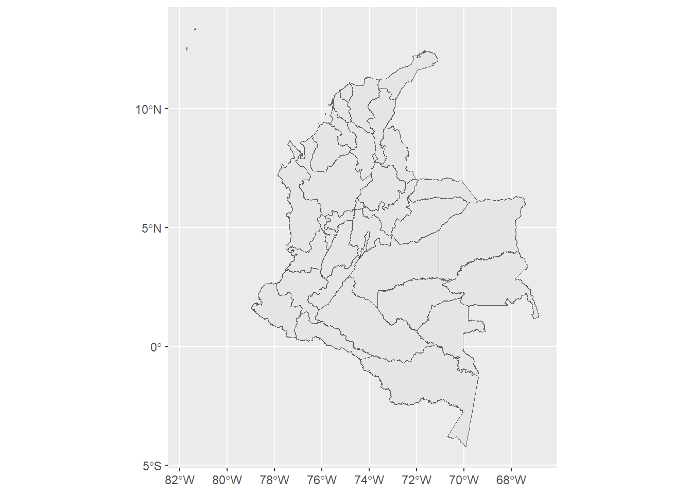
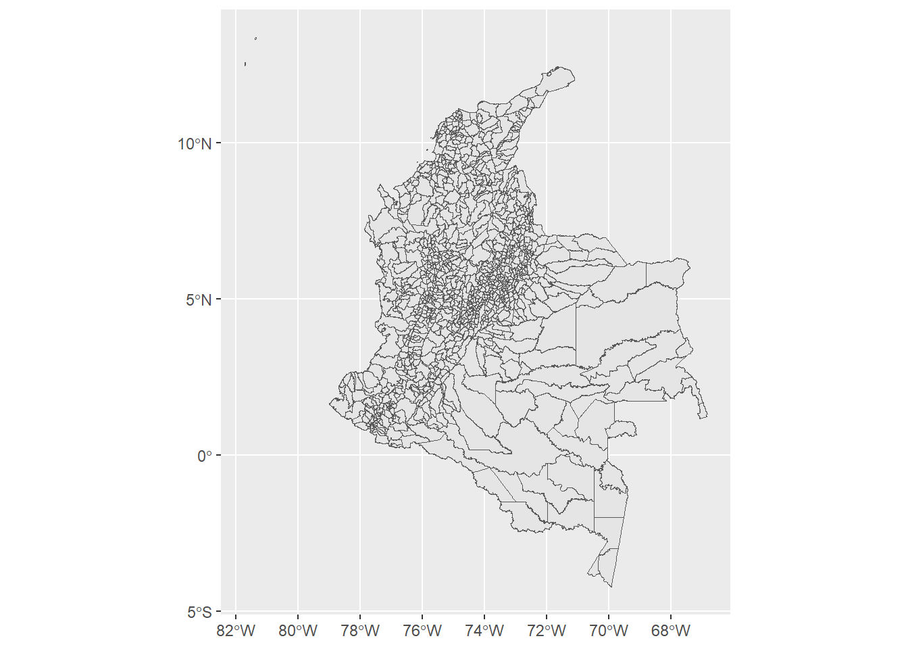
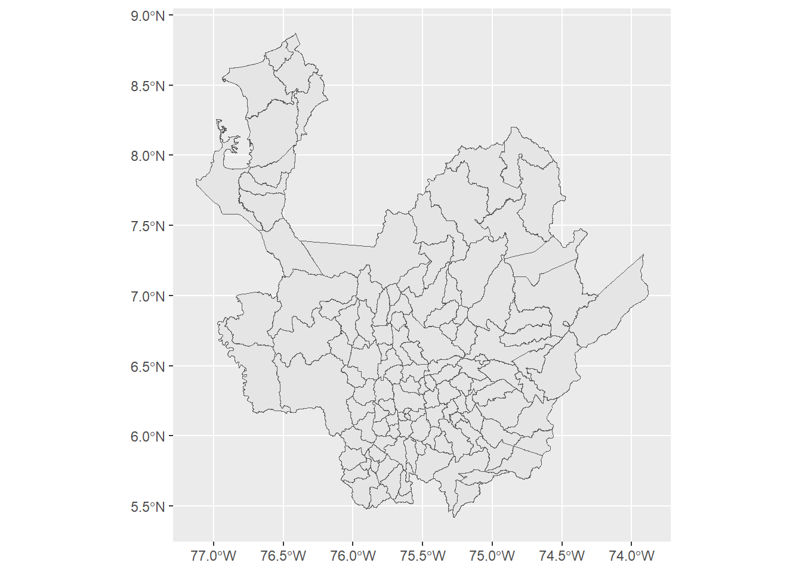
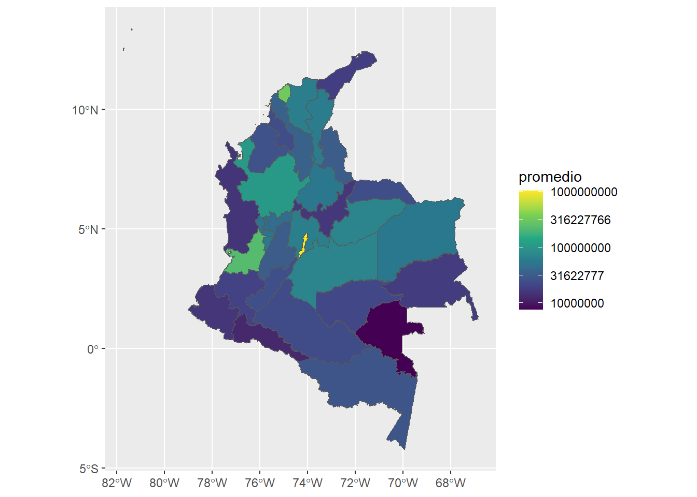
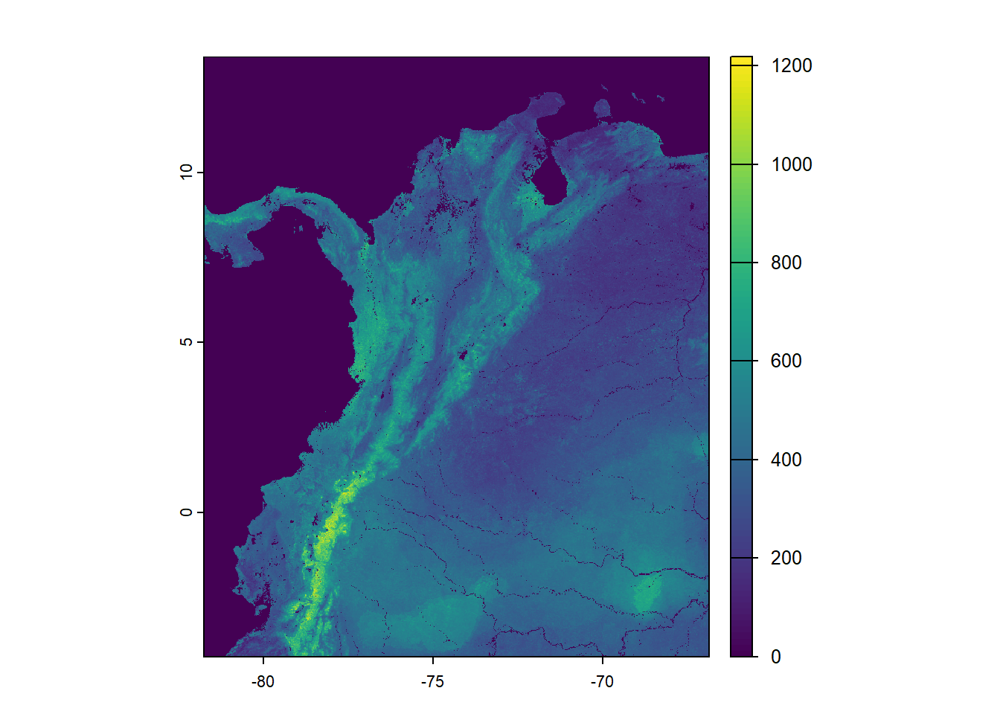
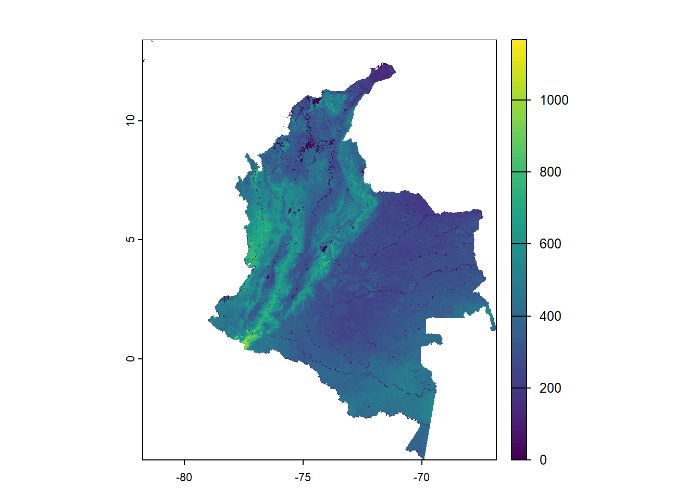
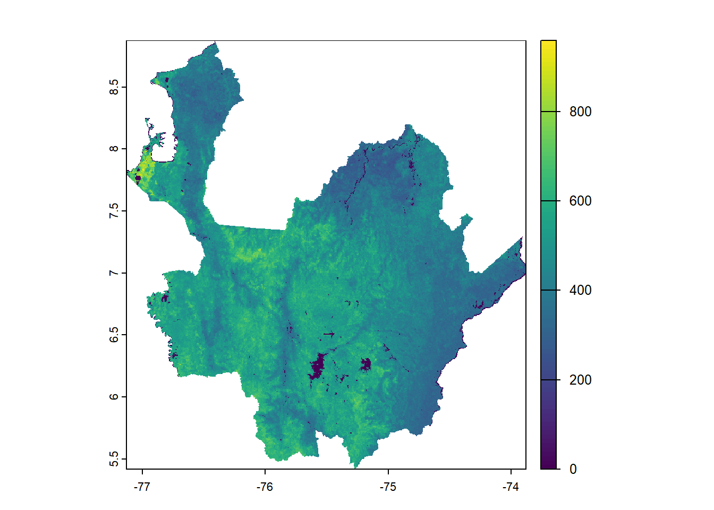

Code
library(tidyverse)
library(scales)
library(sf)
library(terra)
library(janitor)Estadística
library(tidyverse)
library(scales)
library(sf)
library(terra)
library(janitor)
mapa_depto <- st_read("datos/MGN2021_DPTO_POLITICO/MGN_DPTO_POLITICO.shp")Reading layer `MGN_DPTO_POLITICO' from data source
`D:\UdeA\2025-01\estadistica\estadistica-202501\datos\MGN2021_DPTO_POLITICO\MGN_DPTO_POLITICO.shp'
using driver `ESRI Shapefile'
Simple feature collection with 33 features and 9 fields
Geometry type: MULTIPOLYGON
Dimension: XY
Bounding box: xmin: -81.73562 ymin: -4.229406 xmax: -66.84722 ymax: 13.39473
Geodetic CRS: MAGNA-SIRGASmapa_mpios <- st_read("datos/MGN2021_MPIO_POLITICO/MGN_MPIO_POLITICO.shp")Reading layer `MGN_MPIO_POLITICO' from data source
`D:\UdeA\2025-01\estadistica\estadistica-202501\datos\MGN2021_MPIO_POLITICO\MGN_MPIO_POLITICO.shp'
using driver `ESRI Shapefile'
Simple feature collection with 1121 features and 12 fields
Geometry type: MULTIPOLYGON
Dimension: XY
Bounding box: xmin: -81.73562 ymin: -4.229406 xmax: -66.84722 ymax: 13.39473
Geodetic CRS: MAGNA-SIRGASmapa_depto |>
ggplot() +
geom_sf()
mapa_mpios |>
ggplot() +
geom_sf()
mapa_mpios |>
filter(DPTO_CNMBR == "ANTIOQUIA") |>
ggplot() +
geom_sf()
df_creditos <-
read_csv("datos/Colocaciones_de_Cr_dito_Sector_Agropecuario_-_2021-_2024_20250502.csv") |>
clean_names()
df_creditos |> head()df_resumen_deptos <-
df_creditos |>
group_by(id_depto) |>
reframe(promedio = mean(colocacion, na.rm = TRUE))
mapa_deptos_creditos <-
mapa_depto |>
mutate(DPTO_CCDGO = as.numeric(DPTO_CCDGO)) |>
left_join(df_resumen_deptos, df_creditos, by = c("DPTO_CCDGO" = "id_depto"))
mapa_deptos_creditos |>
ggplot(aes(fill = promedio)) +
geom_sf() +
scale_fill_viridis_c(trans = "log10",
breaks = trans_breaks(
trans = "log10",
inv = function(x)
round(10 ^ x, digits = 1)
))
raster_sg <- rast("datos/nitrogen_0-5cm_mean.tif")
raster_sg |> plot()
capa_colombia <-
raster_sg |>
mask(mapa_depto) |>
crop(mapa_depto)capa_colombia |>
plot()
antioquia <- mapa_depto |>
filter(DPTO_CNMBR == "ANTIOQUIA")
capa_antioquia <-
raster_sg |>
mask(antioquia) |>
crop(antioquia)
capa_antioquia |> plot()